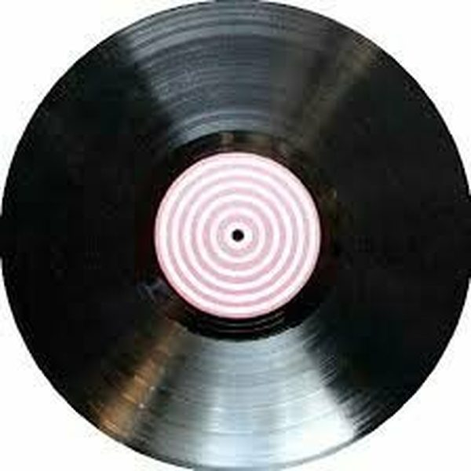

I 19 dischi
 1
Way upDiego Donati,Frank Hernandez
1
Way upDiego Donati,Frank Hernandez

2 Sweet_DreamsMerk & Kremont X Twolate ♪ 3 Pump Up The BassNari, Stefano Pain, Discoplex 4
Sing It BackKevin McKay
4
Sing It BackKevin McKay
 5
You Don't Know MeDuane Harden & House Gospel Choir
5
You Don't Know MeDuane Harden & House Gospel Choir
 6
Ready for moreTwo are, Alar, Korolova
6
Ready for moreTwo are, Alar, Korolova
 7
ClearOcula
7
ClearOcula
 8
IndigoSultan + Shepard
8
IndigoSultan + Shepard
 9
IcarusTim van Werd
9
IcarusTim van Werd
 10
SupercycleJack Back, Citizen Kain & Kiko
10
SupercycleJack Back, Citizen Kain & Kiko
 11
Future LoveAster
11
Future LoveAster
 12
PatienceAzzip & Erik Spike
12
PatienceAzzip & Erik Spike
 13
Go downLandis
13
Go downLandis
 14
Rebel Heart - Milk Bar Vip EditFeel Project
14
Rebel Heart - Milk Bar Vip EditFeel Project
 15
RealityDamien N-Drix & Feder
15
RealityDamien N-Drix & Feder
 16
LIL BEBESteff da Campo x Lost Capital
16
LIL BEBESteff da Campo x Lost Capital
 17
Thinking About ÜÜHÜ, NAGGA
♪
18
Motto - Tiesto VIP RemixTiesto ft. Ava Max
♪
19
Boom boom -- Provenzano mashupJovanotti
17
Thinking About ÜÜHÜ, NAGGA
♪
18
Motto - Tiesto VIP RemixTiesto ft. Ava Max
♪
19
Boom boom -- Provenzano mashupJovanotti
La tracklist
- 1 Way up Diego Donati,Frank Hernandez Idol Experience
- 2 Sweet_Dreams Merk & Kremont X Twolate Mashup
- 3 Pump Up The Bass Nari, Stefano Pain, Discoplex PornoStar Records
- 4 Sing It Back Kevin McKay Glasgow Underground
- 5 You Don't Know Me Duane Harden & House Gospel Choir Ultra Records
- 6 Ready for more Two are, Alar, Korolova Armada Music
- 7 Clear Ocula Armada Music
- 8 Indigo Sultan + Shepard This Never Happened
- 9 Icarus Tim van Werd Protocol Recordings
- 10 Supercycle Jack Back, Citizen Kain & Kiko AFTR:HRS
- 11 Future Love Aster Sub Religion Records
- 12 Patience Azzip & Erik Spike Hexagon
- 13 Go down Landis Fresh Squeeze
- 14 Rebel Heart - Milk Bar Vip Edit Feel Project New Music
- 15 Reality Damien N-Drix & Feder Spinnin' Records
- 16 LIL BEBE Steff da Campo x Lost Capital Spinnin' Records
- 17 Thinking About Ü ÜHÜ, NAGGA CONTROVERSIA
- 18 Motto - Tiesto VIP Remix Tiesto ft. Ava Max Musical Freedom
- 19 Boom boom -- Provenzano mashup Jovanotti Mashup